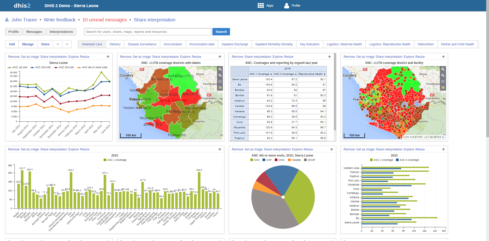

The dashboard can contain any number of objects (charts, maps, reports, tables, resources, etc). These can be freely arranged on the dashboard as you wish. Dashboard items can be located and added by searching for favourites, resources, users or messages in the available search box and clicking on the "Add" button.
|  |
In this screen shot, the dashboard has already been populated with a number of objects, such as charts, map views, tables and messages. There are several hyperlink options available on each item:
Remove
Allows you to remove the item from the dashboard when you have the appropriate user rights.
Get as Image
Opens up a pop-up window and allows you to download the image to your computer.
Share interpretation
Allows you to share an interpretation of the dashboard item. Your interpretation will be shared publicly with other users of the DHIS2 system, in the "Interpretation" section of the dashboard.
Explore
Loads the favorite in its corresponding app (ie. a map will open full-sized in the GIS app).
Resize
Resizes the dashboard item. There are 3 sizes in which to choose from.
Maps, charts and tables can be viewed as full size as images (in the case of charts and map views) or as HTML resources (in the case of reports, tables and messages).
To reorder how the dashboard appears, simply drag-and-drop any of the objects to a new position. In order to change between the various dashboards which are available, simply select the listed items that are available to review. The list can be scrolled though by using the <, > symbols to the left of the dashboard names.